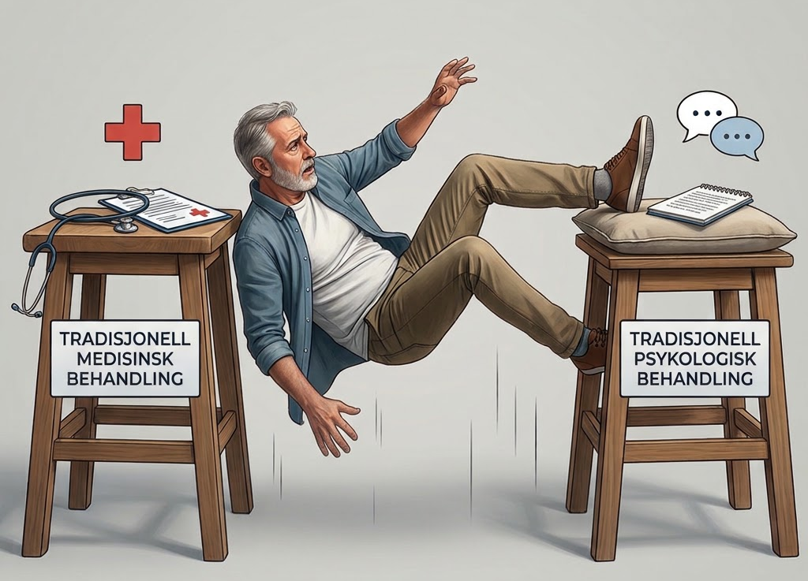
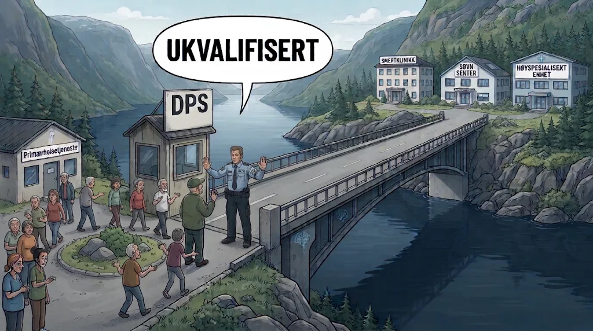
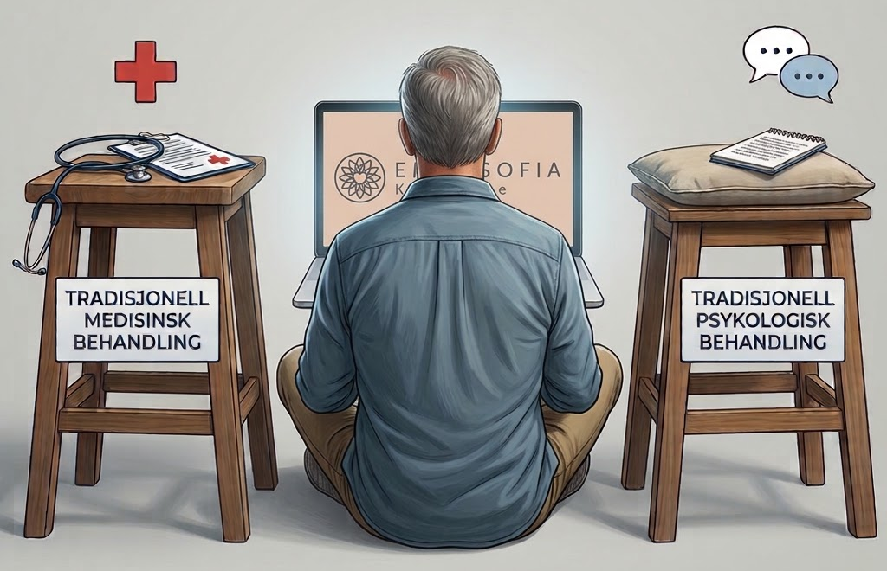

<!DOCTYPE html>
<html lang="nb">

<head>
  <meta charset="UTF-8">
  <meta name="viewport" content="width=device-width, initial-scale=1.0">
  <title>Fagdagen</title>
  <style>
    body {
      margin: 0;
      padding: 0;
      background-color: #0f172a;
      color: #f8fafc;
      font-family: system-ui, -apple-system, BlinkMacSystemFont, "Segoe UI", Roboto, sans-serif;
      min-height: 100vh;
      overflow-x: hidden;
    }

    .stage {
      width: 100%;
      max-width: 100vw;
      min-height: 100vh;
      margin: 0 auto;
      padding: 0.5rem;
      box-sizing: border-box;
      display: grid;
      place-items: center;
    }

    .diagram-wrap,
    .slide-wrap {
      grid-area: 1 / 1;
    }

    .diagram-wrap {
      width: 100%;
      max-width: 580px;
    }

    .diagram-wrap.diagram-hidden {
      opacity: 0;
      visibility: hidden;
      pointer-events: none;
    }

    .diagram-wrap svg {
      display: block;
      width: 100%;
      height: auto;
      filter: drop-shadow(0 10px 15px rgba(0, 0, 0, 0.3));
    }

    .slide-wrap {
      width: 100%;
      max-width: min(97vw, 1500px);
      opacity: 0;
      visibility: hidden;
      pointer-events: none;
      transition: opacity 0.35s ease, visibility 0s linear 0.35s;
    }

    .stage.has-slide .slide-wrap {
      opacity: 1;
      visibility: visible;
      pointer-events: auto;
      transition: opacity 0.35s ease 0.15s, visibility 0s;
    }

    .slide {
      box-sizing: border-box;
      padding: 0;
      width: 100%;
    }

    /* ---------- Slide card ---------- */
    .slide-card {
      --accent: #38bdf8;
      position: relative;
      background: #1e293b;
      border: 1px solid #334155;
      border-radius: 1rem;
      padding: clamp(1.2rem, 2.2vw, 2.2rem);
      min-height: 94vh;
      box-sizing: border-box;
      display: flex;
      flex-direction: column;
      box-shadow: 0 20px 50px -10px rgba(0, 0, 0, 0.6);
    }

    .slide-head {
      display: flex;
      align-items: center;
      gap: 1.5rem;
      margin-bottom: 2rem;
    }

    .slide-icon {
      flex: none;
      width: 72px;
      height: 70px;
      padding: 0;
      border: none;
      background: none;
      cursor: pointer;
      border-radius: 0.5rem;
      transition: transform 0.2s ease;
    }

    .slide-icon:hover {
      transform: scale(1.08);
    }

    .slide-icon:focus-visible {
      outline: 2px solid var(--accent);
      outline-offset: 4px;
    }

    .slide-icon svg {
      display: block;
      width: 100%;
      height: 100%;
    }

    .slide-logo {
      flex: none;
      width: 64px;
      height: 64px;
      border-radius: 50%;
      object-fit: contain;
      background: #0f172a;
      border: 2.5px solid var(--accent);
    }

    .slide-eyebrow {
      margin: 0 0 0.35rem 0;
      color: var(--accent);
      font-size: 0.95rem;
      font-weight: 700;
      letter-spacing: 0.08em;
      text-transform: uppercase;
    }

    .slide-title {
      margin: 0;
      font-size: clamp(1.8rem, 3.2vw, 2.75rem);
      font-weight: 700;
      line-height: 1.2;
      letter-spacing: -0.02em;
      color: #f8fafc;
    }

    .slide-content-area {
      flex: 1;
    }

    .slide-content-centered {
      display: flex;
      flex-direction: column;
      justify-content: center;
      align-items: center;
      text-align: center;
    }

    .slide-body {
      margin: 0;
      font-size: clamp(1.15rem, 1.4vw, 1.4rem);
      line-height: 1.7;
      color: #cbd5e1;
    }

    .slide-body a {
      color: var(--accent);
      text-decoration: underline;
      text-underline-offset: 3px;
    }

    .slide-body a:hover {
      color: #f8fafc;
    }

    .slide-body+.slide-list {
      margin-top: 1.25rem;
    }

    .slide-list+.slide-after {
      margin-top: 1.5rem;
    }

    .slide-body u,
    .slide-list u {
      text-underline-offset: 3px;
    }

    .slide-indent {
      display: inline-block;
      margin: 0.5rem 0 0 1.4rem;
      color: #f8fafc;
    }

    .slide-list {
      margin: 0;
      padding-left: 2rem;
      font-size: clamp(1.15rem, 1.4vw, 1.35rem);
      line-height: 1.75;
      color: #cbd5e1;
    }

    .slide-body strong,
    .slide-list strong {
      color: #f8fafc;
    }

    .slide-list li {
      margin-bottom: 1rem;
    }

    .slide-item.slide-item-hidden {
      display: none !important;
    }

    @keyframes slideItemFadeIn {
      from {
        opacity: 0;
        transform: translateY(8px);
      }

      to {
        opacity: 1;
        transform: translateY(0);
      }
    }

    .slide-item.slide-item-animate {
      animation: slideItemFadeIn 0.35s cubic-bezier(0.22, 1, 0.36, 1) forwards;
    }

    @media (prefers-reduced-motion: reduce) {
      .slide-item.slide-item-animate {
        animation: none !important;
      }
    }

    /* Ordered lists: labels generated by the browser, e.g. (a) (b) (c) or (1) (2) (3) */
    @counter-style paren-alpha {
      system: extends lower-alpha;
      prefix: "(";
      suffix: ") ";
    }

    @counter-style paren-decimal {
      system: extends decimal;
      prefix: "(";
      suffix: ") ";
    }

    .slide-list-none {
      list-style: none;
      padding-left: 0;
    }

    .slide-link {
      padding: 0;
      border: 0;
      background: none;
      color: var(--accent);
      font: inherit;
      font-weight: 700;
      text-decoration: underline;
      text-underline-offset: 3px;
      cursor: pointer;
    }

    .slide-link:hover {
      color: #f8fafc;
    }

    .slide-link:focus-visible {
      outline: 2px solid var(--accent);
      outline-offset: 3px;
    }

    .slide-list-alpha {
      list-style: paren-alpha;
      padding-left: 2.4rem;
    }

    .slide-list-decimal {
      list-style: paren-decimal;
      padding-left: 2.4rem;
    }

    .slide-sublist {
      margin: 0.6rem 0 0 0;
      padding-left: 1.2rem;
      list-style: circle;
    }

    .slide-sublist-compact {
      columns: 2;
      column-gap: 1.5rem;
      padding-left: 1.2rem;
    }

    .slide-sublist-compact li {
      break-inside: avoid;
      margin-bottom: 0.35rem;
      font-size: 0.95em;
    }

    .slide-sublist li {
      margin-bottom: 0.5rem;
    }

    .slide-list a {
      color: var(--accent);
      text-decoration: underline;
      text-underline-offset: 3px;
    }

    .slide-list a:hover {
      color: #f8fafc;
    }

    .slide-list li::marker {
      color: var(--accent);
    }

    .slide-visual {
      text-align: center;
    }

    .slide-split-row {
      display: flex;
      flex-direction: row;
      align-items: flex-start;
      gap: 2.5rem;
      width: 100%;
      height: 100%;
    }

    .slide-split-col {
      flex: 1 1 50%;
      min-width: 0;
    }

    .slide-split-col .slide-list {
      padding-left: 1.5rem;
    }

    .slide-split-col .slide-img {
      max-height: min(65vh, 580px);
      width: 100%;
      object-fit: contain;
    }

    .slide-split-row.slide-split-full {
      gap: 0;
    }

    .slide-split-row.slide-split-full .slide-split-col:first-child {
      display: none;
    }

    .slide-split-row.slide-split-full .slide-split-col.slide-visual {
      flex: 1 1 100%;
    }

    .slide-split-row.slide-split-full .slide-split-col .slide-img {
      max-height: min(68vh, 650px);
      width: auto;
    }

    @media (max-width: 900px) {
      .slide-split-row {
        flex-direction: column;
        gap: 1.5rem;
      }

      .slide-split-col {
        width: 100%;
      }
    }

    .slide-nav {
      display: flex;
      align-items: center;
      justify-content: space-between;
      margin-top: auto;
      padding-top: 1.5rem;
      border-top: 1px solid #334155;
      color: #94a3b8;
      font-size: 1rem;
    }

    .slide-nav-end {
      justify-content: flex-end;
    }

    .slide-nav button {
      border: 1px solid #334155;
      background: #0f172a;
      color: #cbd5e1;
      border-radius: 0.6rem;
      padding: 0.6rem 1.4rem;
      font-size: 1.05rem;
      font-weight: 600;
      cursor: pointer;
      transition: all 0.2s ease;
    }

    .slide-nav button:hover {
      border-color: var(--accent);
      background: #1e293b;
      color: #f8fafc;
      transform: translateY(-1px);
    }

    /* ---------- Diagram text styles ---------- */
    .label-pill {
      font-size: 19px;
      font-weight: 700;
      fill: #ffffff;
      paint-order: stroke fill;
      stroke: #0f172a;
      stroke-width: 5px;
    }

    .dir-title {
      font-size: 15px;
      font-weight: 700;
      fill: #f8fafc;
      paint-order: stroke fill;
      stroke: #0f172a;
      stroke-width: 4px;
    }

    /* ---------- Two-circle Venn inside the Health Psychology slide ---------- */
    .mini-venn {
      display: block;
      width: 100%;
      max-width: 960px;
      max-height: min(70vh, 620px);
      height: auto;
      margin: 1.5rem auto 0 auto;
    }

    .main-venn {
      display: block;
      width: auto;
      max-width: 100%;
      height: min(65vh, 640px);
      max-height: 65vh;
      margin: 0 auto;
      filter: drop-shadow(0 10px 15px rgba(0, 0, 0, 0.3));
    }

    .slide-img {
      display: block;
      max-width: 100%;
      max-height: min(68vh, 650px);
      width: auto;
      height: auto;
      margin: 0 auto;
      border-radius: 0.75rem;
      box-shadow: 0 10px 25px -5px rgba(0, 0, 0, 0.4);
    }

    .mini-label {
      font-size: 20px;
      font-weight: 700;
    }

    .mini-overlap {
      font-size: 16px;
      font-weight: 700;
      fill: #f5d0fe;
    }

    @media (max-width: 899px) {
      .slide-card {
        padding: 1.25rem;
      }
    }

    @media (prefers-reduced-motion: reduce) {

      .slide-wrap,
      .stage.has-slide .slide-wrap,
      .slide-icon {
        transition: none !important;
      }
    }
  </style>
</head>

<body>

  <main class="stage has-slide" id="stage">

    <!-- Slide area -->
    <aside class="slide-wrap" aria-live="polite">
      <div class="slide" id="slide"></div>
    </aside>

  </main>

  <script>
    /* ------------------------------------------------------------------
       Slides — one entry per clickable. Each topic has a list of `pages`.
       Add more objects to `pages` to give a topic more slides.
       Every page needs a `title` (the slide title, big heading; the topic `title` is shown on the small line above it)
       and can have `text`, `list` (array of bullet points), or `visual` (custom markup).
       `logo` is optional.
       ------------------------------------------------------------------ */
    const mainVenn = `
      <svg class="main-venn" viewBox="205 35 490 710" xmlns="http://www.w3.org/2000/svg" role="img"
        aria-label="Helsepsykologi og EmmaSofia møtes i Senter for smerte og helsepsykologi">
        <circle cx="450" cy="275" r="230" fill="rgba(168, 85, 247, 0.18)" stroke="#a855f7" stroke-width="3" />
        <circle cx="450" cy="505" r="230" fill="rgba(236, 72, 153, 0.18)" stroke="#ec4899" stroke-width="3" />
        <g onclick="goToId('helsepsykologi')" style="cursor:pointer">
          <text x="450" y="181" text-anchor="middle" class="label-pill" fill="#c084fc">Helsepsykologi</text>
        </g>
        <g>
          <text x="450" y="611" text-anchor="middle" class="label-pill" fill="#f472b6">EmmaSofia</text>
        </g>
        <g onclick="goToId('senter')" style="cursor:pointer">
          <text text-anchor="middle" class="dir-title" fill="#e0f2fe">
            <tspan x="450" y="365" font-size="17" font-weight="700">Senter for</tspan>
            <tspan x="450" y="391" font-size="19" font-weight="700">smerte og</tspan>
            <tspan x="450" y="417" font-size="17" font-weight="700">helsepsykologi</tspan>
          </text>
        </g>
      </svg>`;

    const miniVenn = `
      <svg class="mini-venn" viewBox="0 0 400 260" xmlns="http://www.w3.org/2000/svg" role="img"
        aria-label="Venndiagram: Somatisk og psykisk overlapper i somatisk-psykisk komorbiditet">
        <defs>
          <clipPath id="mini-clip-somatic">
            <circle cx="140" cy="130" r="120" />
          </clipPath>
        </defs>
        <circle cx="140" cy="130" r="120" fill="rgba(168, 85, 247, 0.22)" stroke="#a855f7" stroke-width="3" />
        <circle cx="260" cy="130" r="120" fill="rgba(56, 189, 248, 0.22)" stroke="#38bdf8" stroke-width="3" />
        <circle cx="260" cy="130" r="120" fill="rgba(240, 171, 252, 0.28)" clip-path="url(#mini-clip-somatic)" />
        <text x="80" y="136" text-anchor="middle" class="mini-label" fill="#c084fc">Somatisk</text>
        <text x="320" y="136" text-anchor="middle" class="mini-label" fill="#7dd3fc">Psykisk</text>
        <text class="mini-overlap" text-anchor="middle">
          <tspan x="200" y="112">Somatisk-</tspan>
          <tspan x="200" y="132">psykisk</tspan>
          <tspan x="200" y="152">komorbiditet</tspan>
        </text>
      </svg>`;

    const slides = [
      {
        eyebrow: "Fagdagen",
        title: "Helsepsykologi & EmmaSofia",
        visual: mainVenn
      },
      {
        id: "helsepsykologi",
        eyebrow: "Helsepsykologi",
        title: "Somatisk-psykisk komorbiditet",
        visual: miniVenn
      },
      {
        eyebrow: "Helsepsykologi",
        title: "Eksempler",
        list: [
          "Kronisk <u>smerte</u> komorbid med alvorlig <u>depressiv</u> lidelse",
          "Kronisk <u>søvnforstyrrelse</u> komorbid med generalisert <u>angst</u>lidelse",
          "Traume etter <u>medisinsk prosedyre</u> komorbid med <u>PTSD</u>",
          "Begge retninger og til og med sløyfer av årsakssammenheng: stress kan føre til anspente skuldre, som igjen gjør pasienten mer irritabel.",
          "Også det som før ble kalt «psykosomatiske» tilstander: Angst forverrer IBS-symptomer"


        ]
      },
      {
        title: "Pasienter uten tilbud",
        visual: ''
      },
      {
        title: "Spesialisering i klinisk helsepsykologi",
        list: [
          "Vitenskapsbasert, helhetlig tilnærming",
          "Fokus på kroniske tilstander og somatisk-psykiske komorbiditeter",
          '<a href="https://www.psykologforeningen.no/kurs-og-utdanning/obligatorisk-program/klinisk-helsepsykologi-3" target="_blank" rel="noopener">Ny spesialisering</a>, færre enn 12 uteksaminerte spesialister i Norge',
          'I Sverige: 18 uteksaminerte spesialister (inkludert meg)'
        ]
      },
      {
        title: "Helsepsykologi utenfor spesialiseringen",
        list: [
          "Noen psykologer har allerede erfaring med fagfeltet",
          'F.eks. nærliggende spesialiseringer:' +
          '<ul class="slide-sublist">' +
          '<li><a href="https://www.psykologforeningen.no/kurs-og-utdanning/obligatorisk-program/nevropsykologi-5" target="_blank" rel="noopener">Nevropsykologi</a></li>' +
          '<li><a href="https://www.psykologforeningen.no/kurs-og-utdanning/obligatorisk-program/habiliteringspsykologi-2" target="_blank" rel="noopener">Habiliteringspsykologi</a></li>' +
          '<li><a href="https://www.psykologforeningen.no/kurs-og-utdanning/obligatorisk-program/psykoterapi" target="_blank" rel="noopener">Psykoterapi</a></li>' +
          '</ul>',
          'Eller psykologer med erfaring fra høyspesialiserte enheter:' +
          '<ul class="slide-sublist">' +
          '<li>Smerteklinikker</li>' +
          '<li>Søvnsentre</li>' +
          '<li>Rehabiliterings- og habiliteringssentre</li>' +
          '</ul>'
        ]
      },
      {
        title: "Egne erfaringer fra Vest-Sverige",
        list: [
          "<strong>Bakgrunn:</strong> Svensk spesialisering i helsepsykologi, svensk spesialisering i AFPT psykoterapi og pågående norsk spesialisering i klinisk helsepsykologi (smerte)",
          "<strong>2018:</strong> Som en del av min spesialistutdanning, et lite FoU-prosjekt innen helsepsykologi",
          "<strong>2019:</strong> Tilbød skreddersydd psykologisk behandling for spesifikke somatiske komorbiditeter ved noen få lokale helsesentre",
          '<strong>Kort tid etter:</strong> Massiv økning i:' +
          '<ul class="slide-sublist">' +
          '<li>Antall pasienter</li>' +
          '<li>Bredde og variasjon i somatiske tilstander</li>' +
          '<li>Samarbeidende sentre (over 18 helsesentre)</li>' +
          '</ul>',
          '<strong>Noen få år senere:</strong> Det største knutepunktet i sitt slag i Vest-Sverige, med over 20 initiativer og RCT-studier' +
          '<div style="margin-top: 0.6rem; font-size: 1.05rem; line-height: 1.6; color: #cbd5e1;">' +
          'Eksempler fra i år:' +
          '<ul class="slide-sublist">' +
          '<li><a href="https://www.jmir.org/2026/1/e86792/" target="_blank" rel="noopener">JMIR Vol28 (2026)</a>, som kombinerer fysioterapi og CBT for kronisk smerte</li>' +
          '<li><a href="https://formative.jmir.org/2026/1/e81285" target="_blank" rel="noopener">JMIR Formative Research Vol10 (2026)</a>, om blandet CBT og ACT for insomni</li>' +
          '<li><a href="https://gup.ub.gu.se/publication/359583" target="_blank" rel="noopener">Under publisering</a>, om blandet ACT for migrene</li>' +
          '</ul>' +
          '</div>',
          '<strong>2025:</strong> Solli DPS ansatte meg for å hjelpe med et lignende insomniprogram, starten på min norske reise'
        ]
      },
      {
        title: "Egne erfaringer fra Vest-Norge",
        split: true,
        visual: '',
        list: [
          "Helsepsykologi er konsentrert og isolert i høyspesialiserte enheter som smerteklinikker",
          "Mange pasienter kvalifiserer ikke",
          "Dokumentert over 70 pasienter i løpet av ett års egen praksis ved DPS",
          "DPS-er tvinges til å opprette begrensede underenheter, som for eksempel kun for insomni",
          "Likevel forblir andre helsepsykologiske tilstander uadressert",
          "Per i dag er privat sektor det eneste alternativet"
        ]
      },
      {
        title: "Observasjon",
        centered: true,
        text: "Per i dag har pasienter med helsepsykologiske tilstander under høy alvorlighetsgrad ingen egnede alternativer utenom privat sektor!<br><br>Det fantes heller ikke noe privat spesialistsenter for helsepsykologi ... <strong>før nå!</strong>"
      },
      {
        eyebrow: "Fagdagen",
        title: "Senter for smerte og helsepsykologi",
        visual: mainVenn
      },
      {
        id: "senter",
        eyebrow: "Senter for smerte og helsepsykologi",
        title: "Lignende pasientprofil hos EmmaSofia",
        split: true,
        visual: '',
        list: [
          "Har allerede prøvd både tradisjonell medisinsk og psykologisk behandling",
          "Tilstandene er ofte kroniske og sammensatte, med fysiske symptomer",
          "Bare ved å beskrive helsepsykologi på min EmmaSofia-profil har det vært en jevn strøm av slike pasienter",
          "Inkludert ketaminpasienter, behandlingsresistent depresjon komorbid med somatiske utfordringer",
          "F.eks. nylig en ketaminpasient, behandlingsresistent depresjon komorbid med migrene"
        ]
      },
      {
        title: "Helsepsykologi inn i EmmaSofias portefølje",
        split: true,
        visual: '',
        list: [
          'På <a href="https://emmasofia.no/smerte-og-helsepsykologi" target="_blank" rel="noopener">hovedsiden</a> listes 12 fokusområder:' +
          '<ul class="slide-sublist slide-sublist-compact">' +
          '<li><a href="https://emmasofia.no/smerte-og-helsepsykologi/langvarige-smerter/" target="_blank" rel="noopener">Langvarige smerter</a></li>' +
          '<li><a href="https://emmasofia.no/smerte-og-helsepsykologi/utmattelse/" target="_blank" rel="noopener">Utmattelse</a></li>' +
          '<li><a href="https://emmasofia.no/smerte-og-helsepsykologi/fibromyalgi/" target="_blank" rel="noopener">Fibromyalgi</a></li>' +
          '<li><a href="https://emmasofia.no/smerte-og-helsepsykologi/ibs-og-vedvarende-mageplager/" target="_blank" rel="noopener">IBS og mageplager</a></li>' +
          '<li><a href="https://emmasofia.no/smerte-og-helsepsykologi/migrene-og-hodepine/" target="_blank" rel="noopener">Migrene og hodepine</a></li>' +
          '<li><a href="https://emmasofia.no/smerte-og-helsepsykologi/sovnvansker/" target="_blank" rel="noopener">Søvnvansker</a></li>' +
          '<li><a href="https://emmasofia.no/smerte-og-helsepsykologi/helseangst/" target="_blank" rel="noopener">Helseangst</a></li>' +
          '<li><a href="https://emmasofia.no/smerte-og-helsepsykologi/kvinnehelse/" target="_blank" rel="noopener">Kvinnehelse</a></li>' +
          '<li><a href="https://emmasofia.no/smerte-og-helsepsykologi/utbrenthet/" target="_blank" rel="noopener">Utbrenthet</a></li>' +
          '<li><a href="https://emmasofia.no/smerte-og-helsepsykologi/palliasjon/" target="_blank" rel="noopener">Palliasjon</a></li>' +
          '<li><a href="https://emmasofia.no/smerte-og-helsepsykologi/psykiske-belastninger-ved-fysisk-sykdom/" target="_blank" rel="noopener">Belastninger v/ fysisk sykdom</a></li>' +
          '<li><a href="https://emmasofia.no/smerte-og-helsepsykologi/psykiske-belastninger-ved-medisinske-prosedyrer/" target="_blank" rel="noopener">Belastninger v/ prosedyrer</a></li>' +
          '</ul>',
          'Målet er å tilby spesialiserte behandlinger per problemområde'
        ]
      },
      {
        title: "Modell",
        intro: "To parallelle behandlingsmodeller",
        list: [
          "<strong>Galleri-modell:</strong> erfarne psykologer følger egen tilnærming",
          "<strong>EBBA-modell:</strong> EvidensBasert Behandling for Alle, spesifikke protokollbaserte metoder, spesielt for psykologer som er nye på feltet"
        ]
      },
      {
        title: "Eksempel på pasientforløp",
        intro: "La oss ta insomni som eksempel:",
        ordered: "decimal",
        list: [
          '<strong>Oppstartsamtale:</strong>' +
          '<ul class="slide-sublist">' +
          '<li>Insomni identifiseres som et hovedproblem, og pasienten ønsker fokus på dette</li>' +
          '<li>Ideelt sett, men ikke nødvendigvis, innebærer prosessen en biopsykososial utredning</li>' +
          '<li>Det vil tilbys kurs i biopsykososial utredning holdt av en ekstern ekspert</li>' +
          '<li>Det vil foreligge maler og relevante spørreskjemaer i Psykbase</li>' +
          '</ul>',
          '<strong>Spesialisert behandling:</strong>' +
          '<ul class="slide-sublist">' +
          '<li>Erfarne psykologer kan velge ulike metoder</li>' +
          '<li>Ideelt sett, men ikke nødvendigvis, følger behandleren en protokollbasert metode som CBT-I</li>' +
          '<li>Det vil foreligge retningslinjer for CBT-I for interesserte behandlere</li>' +
          '<li>Det vil tilbys kurs i CBT-I eller protokollbasert behandling holdt av en ekstern ekspert</li>' +
          '</ul>',
          '<strong>Medisinassistert psykoterapi:</strong>' +
          '<ul class="slide-sublist">' +
          '<li>Dersom behandlingsresistent depresjon identifiseres som en nøkkelfaktor, tilbys KAP-forløp</li>' +
          '</ul>'
        ]
      },
      {
        title: "Neste steg",
        list: [
          'Velg området du har erfaring med eller interesse for fra Notion',
          'Delta på det ukentlige fagmøtet om helsepsykologi',
          'Hvis du identifiserer pasienter med disse problemene, henvis til senteret',
          'Sammen bygger vi et fagmiljø uten sidestykke i Norge:' +
          '<ul class="slide-sublist">' +
          '<li>Kurs med eksterne forelesere</li>' +
          '<li>Følge, lære og videreutvikle de skreddersydde protokollene som tilbys</li>' +
          '<li>Gjensidig auskultasjon: vi deltar på hverandres pasientsesjoner og diskuterer hvordan vi kan forbedre oss</li>' +
          '</ul>',
          'Nettsidene til senteret skal representere oss alle, innspill og forslag er hjertelig velkomne'
        ]
      }
    ];

    // Inherit section eyebrow for slides that omit it
    let _lastEyebrow = "";
    slides.forEach(s => {
      if (s.eyebrow) _lastEyebrow = s.eyebrow;
      else s.eyebrow = _lastEyebrow;
    });

    const slideEl = document.getElementById('slide');
    let _page = 0;
    let _subslide = 0;

    const duration = () =>
      window.matchMedia('(prefers-reduced-motion: reduce)').matches ? 0 : 700;

    function getSubslideCount(page) {
      if (!page) return 1;
      if (page.subslides && Array.isArray(page.subslides)) return page.subslides.length;
      if (page.list && Array.isArray(page.list) && page.list.length > 0) return page.list.length + 1;
      return 1;
    }

    function updateNav() {
      const page = slides[_page];
      if (!page) return;
      const subCount = getSubslideCount(page);
      const isFirst = (_page === 0 && _subslide === 0);
      const isLast = (_page === slides.length - 1 && _subslide === subCount - 1);

      const prevBtn = slideEl.querySelector('.slide-nav-prev');
      const nextBtn = slideEl.querySelector('.slide-nav-next');

      if (prevBtn) {
        prevBtn.style.visibility = isFirst ? 'hidden' : 'visible';
      }

      if (nextBtn) {
        if (isLast) {
          nextBtn.setAttribute('onclick', 'goToIndex(0)');
          nextBtn.setAttribute('aria-label', 'Tilbake til starten');
          nextBtn.setAttribute('title', 'Tilbake til starten');
          nextBtn.innerHTML = '&#8617;';
        } else {
          nextBtn.setAttribute('onclick', 'nextPage()');
          nextBtn.setAttribute('aria-label', 'Neste lysbilde');
          nextBtn.setAttribute('title', 'Neste lysbilde');
          nextBtn.innerHTML = '&rarr;';
        }
      }
    }

    function revealSubslide(index, animate) {
      const splitRow = slideEl.querySelector('.slide-split-row');
      if (splitRow && index >= 1) {
        splitRow.classList.remove('slide-split-full');
      }
      const items = slideEl.querySelectorAll('.slide-item');
      const itemIndex = index - 1;
      if (items[itemIndex]) {
        items[itemIndex].classList.remove('slide-item-hidden');
        items[itemIndex].classList.add('slide-item-visible');
        if (animate && duration()) {
          items[itemIndex].classList.add('slide-item-animate');
        }
        items[itemIndex].scrollIntoView({ behavior: 'smooth', block: 'nearest' });
      }
    }

    function hideSubslide(index) {
      const items = slideEl.querySelectorAll('.slide-item');
      const itemIndex = index - 1;
      if (items[itemIndex]) {
        items[itemIndex].classList.remove('slide-item-visible', 'slide-item-animate');
        items[itemIndex].classList.add('slide-item-hidden');
      }
      if (index === 1) {
        const splitRow = slideEl.querySelector('.slide-split-row');
        if (splitRow) {
          splitRow.classList.add('slide-split-full');
        }
      }
    }

    function renderSlide(pageIndex, animate) {
      const page = slides[pageIndex];
      const subCount = getSubslideCount(page);
      const isFirst = (pageIndex === 0 && _subslide === 0);
      const isLast = (pageIndex === slides.length - 1 && _subslide === subCount - 1);

      const eyebrow = `<p class="slide-eyebrow">${page.eyebrow}</p>`;
      const listTag = page.ordered ? 'ol' : 'ul';
      const listHtml = page.list ? `
        <${listTag} class="slide-list${page.ordered ? ' slide-list-' + page.ordered : ''}">
          ${page.list.map((item, idx) => `
            <li class="slide-item ${idx < _subslide ? 'slide-item-visible' : 'slide-item-hidden'}" data-index="${idx}">${item}</li>
          `).join('')}
        </${listTag}>` : '';

      let body;
      if (page.split) {
        const isFullVisual = (_subslide === 0 && page.list && page.list.length > 0);
        body = `
          <div class="slide-split-row${isFullVisual ? ' slide-split-full' : ''}">
            <div class="slide-split-col">
              ${page.intro ? `<p class="slide-body slide-intro">${page.intro}</p>` : ''}
              ${listHtml}
              ${page.after ? `<p class="slide-body slide-after">${page.after}</p>` : ''}
            </div>
            <div class="slide-split-col slide-visual">
              ${page.visual || ''}
            </div>
          </div>`;
      } else {
        body = page.visual
          ? `<div class="slide-visual">${page.visual}</div>`
          : (page.text ? `<p class="slide-body">${page.text}</p>` : '') +
          (page.intro ? `<p class="slide-body slide-intro">${page.intro}</p>` : '') +
          listHtml +
          (page.after ? `<p class="slide-body slide-after">${page.after}</p>` : '');
      }

      const prevBtn = `<button class="slide-nav-prev" onclick="prevPage()" aria-label="Forrige lysbilde" title="Forrige lysbilde" style="visibility:${isFirst ? 'hidden' : 'visible'}">&larr;</button>`;
      const nextBtn = isLast
        ? `<button class="slide-nav-next" onclick="goToIndex(0)" aria-label="Tilbake til starten" title="Tilbake til starten">&#8617;</button>`
        : `<button class="slide-nav-next" onclick="nextPage()" aria-label="Neste lysbilde" title="Neste lysbilde">&rarr;</button>`;
      const nav = `
          <footer class="slide-nav">
            ${prevBtn}
            ${nextBtn}
          </footer>`;

      slideEl.innerHTML = `
        <article class="slide-card" style="--accent:${page.accent || '#c084fc'}">
          <header class="slide-head">
            <div>
              ${eyebrow}
              <h2 class="slide-title">${page.title}</h2>
            </div>
          </header>
          <div class="slide-content-area${page.centered ? ' slide-content-centered' : ''}">
            ${body}
          </div>
          ${nav}
        </article>`;

      // Safeguard: every external link opens in a new tab
      slideEl.querySelectorAll('a[href^="http"]').forEach(a => {
        a.target = '_blank';
        a.rel = 'noopener noreferrer';
      });

      if (animate && duration()) {
        slideEl.firstElementChild.animate(
          [{ opacity: 0 }, { opacity: 1 }],
          { duration: 250, easing: 'ease-out' }
        );
      }
    }

    function goToIndex(index) {
      if (index < 0 || index >= slides.length) return;
      _page = index;
      _subslide = 0;
      renderSlide(_page, true);
    }

    function goToId(id) {
      const idx = slides.findIndex(s => s.id === id);
      if (idx !== -1) goToIndex(idx);
    }

    function nextPage() {
      const page = slides[_page];
      const subCount = getSubslideCount(page);

      if (_subslide < subCount - 1) {
        _subslide++;
        revealSubslide(_subslide, true);
        updateNav();
        return;
      }

      if (_page < slides.length - 1) {
        _page++;
        _subslide = 0;
        renderSlide(_page, true);
      } else {
        goToIndex(0);
      }
    }

    function prevPage() {
      if (_subslide > 0) {
        hideSubslide(_subslide);
        _subslide--;
        updateNav();
        return;
      }

      if (_page > 0) {
        _page--;
        const prevPageObj = slides[_page];
        _subslide = getSubslideCount(prevPageObj) - 1;
        renderSlide(_page, true);
      }
    }

    // Keyboard: → / Space / PageDown advances subslide/page, ← / PageUp goes back
    document.addEventListener('keydown', e => {
      if (e.key === 'ArrowRight' || e.key === 'PageDown' || e.key === ' ') {
        if (e.key === ' ' && (e.target.tagName === 'BUTTON' || e.target.tagName === 'A')) return;
        e.preventDefault();
        nextPage();
      } else if (e.key === 'ArrowLeft' || e.key === 'PageUp') {
        e.preventDefault();
        prevPage();
      }
    });

    renderSlide(0, false);
  </script>
</body>

</html>